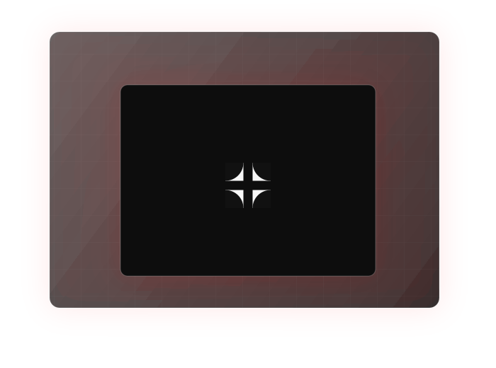

Estudio de design para agencias e infoprodutos
Plugue um estudio criativo na sua operacao sem depender de freelancer toda semana
A Studio Haki entra como parceiro recorrente para entregar artes, videos e landing pages com prazo, organizacao e qualidade consistente.
Entregas em ate 3 dias uteis
Ate 5 demandas diarias
Fluxo no Trello


Landing Pages
Ads & Creatives
Videos
Design Systems
Web Elements
Soa familiar?
A demanda cresce, mas a entrega vira gargalo
Agencia e infoprodutor nao perdem dinheiro so por falta de estrategia. Muitas vezes perdem porque a operacao criativa nao acompanha o ritmo da venda.
01
Freelancer sumiu no meio da demanda
Voce precisa entregar para o cliente, mas cada nova arte, video ou pagina vira uma corrida atras de alguem disponivel.
02
O lancamento esta rodando e tudo e urgente
Criativos, paginas, ajustes e testes aparecem ao mesmo tempo. Quando a entrega atrasa, o lucro do lancamento sente.
03
A equipe interna nao da conta
A agencia vende, mas o operacional fica esticado. O resultado e retrabalho, prazo quebrado e cliente cobrando.
Antes / Depois
Antes da Haki, improviso. Depois, fluxo.
Antes
Entrega dependente de sorte
- Demandas espalhadas entre WhatsApp, Drive e conversas soltas.
- Freelancer diferente para cada necessidade.
- Prazos incertos e medo de travar o lancamento.
- Qualidade variando conforme disponibilidade.
Depois
Estudio plugado na operacao
- Solicitacoes organizadas no Trello.
- Prazos claros por card e por prioridade.
- Entregas recorrentes para manter a agencia rodando.
- Parceiro de longo prazo, nao fornecedor solto.
O que a Haki faz
Um estudio recorrente para tirar design, video e landing page do improviso
Voce assina um plano, entra no fluxo de atendimento, solicita suas demandas pelo Trello e acompanha cada entrega com clareza. A Haki vira uma extensao criativa da sua operacao.
Quero plugar a Haki ↗Artes para escala
Criativos, posts, banners, pecas de campanha, anuncios e materiais visuais para manter a operacao ativa todos os dias.
Videos para demanda diaria
Edicoes e adaptacoes para conteudo, anuncios, lancamentos e necessidades recorrentes de agencias e experts.
Landing pages e sites
Paginas para campanhas, captura, vendas, testes de oferta, lancamentos e apresentacao profissional do produto.
Fluxo organizado no Trello
Cada solicitacao entra em um card com prazo, status e acompanhamento. Menos mensagem perdida, mais controle da entrega.
Como funciona
Voce assina, entra no Trello e comeca a solicitar
01
Escolha o plano
Definimos o volume ideal para sua operacao com base no tipo de demanda, frequencia e complexidade.
02
Entramos no fluxo
Voce recebe acesso ao Trello da recorrencia, com espaco para solicitacoes, status e prazos.
03
Solicite demandas
Envie briefing, referencias, arquivos e prioridade. A Haki organiza a execucao dentro do plano.
04
Receba com previsibilidade
As entregas seguem prazo combinado, com ate 3 dias uteis para demandas dentro do escopo.
Trabalhos e entregas
Uma esteira visual para manter campanha, conteudo e pagina em movimento
Planos de recorrencia
Escolha o nivel de suporte que sua operacao precisa agora
Os planos abaixo sao estrutura inicial. Valores, limites e escopos podem ser ajustados antes da versao final.
Essencial
Para manter a base em dia
Operacoes que precisam de demandas visuais recorrentes sem inflar equipe interna.
- Artes recorrentes
- Ajustes simples
- Organizacao no Trello
- Prazo conforme escopo
Escala
Para demanda diaria
Agencias e infoprodutores que precisam de volume, prioridade e previsibilidade.
- Ate 5 demandas diarias
- Artes, videos e paginas conforme escopo
- Prioridade de producao
- Prazo de ate 3 dias uteis
Performance
Para lancamentos e campanhas
Quando a operacao precisa de um nivel visual mais trabalhado e suporte criativo maior.
- Demandas de maior complexidade
- Landing pages mais trabalhadas
- Suporte criativo para campanhas
- Fluxo recorrente com prioridade
Talvez voce esteja pensando
"Mas eu ja confiei em fornecedor antes e me ferrei"
Justo. Muita agencia ja passou por atraso, sumico, entrega ruim ou promessa bonita. Por isso a Haki precisa ser medida por processo, nao por frase de efeito.
E se atrasar?
O fluxo no Trello deixa prazo, status e prioridade visiveis. Demandas dentro do escopo seguem a previsibilidade combinada no plano.
E se a qualidade nao for o que espero?
A recorrencia principal e pensada para escala com consistencia. Demandas mais refinadas entram em plano com maior profundidade visual.
Isso substitui minha equipe?
Pode complementar ou aliviar sua equipe. A ideia e plugar um estudio na operacao, nao criar mais uma camada de confusao.
FAQ
Perguntas antes de plugar a Haki
Para quem e a Studio Haki?
Para agencias de marketing, infoprodutores e operacoes que precisam de demandas recorrentes de design, video e landing pages.
Qual e o prazo de entrega?
Demandas dentro do escopo podem ser entregues em ate 3 dias uteis, dependendo do plano, complexidade e fila de prioridade.
Como eu solicito as demandas?
Depois de assinar, voce entra no Trello da recorrencia. La voce abre cards, envia briefing e acompanha status e prazo.
Quantas demandas posso pedir?
Depende do plano contratado. Existe possibilidade de ate 5 demandas diarias conforme o plano e o escopo definido.
A Haki faz demandas de lancamento?
Sim. A Haki ja atendeu mais de 10 lancamentos e pode apoiar criativos, paginas, ajustes e materiais visuais dentro do plano escolhido.
Proximo passo
Pronto para tirar sua entrega criativa do improviso?
Plugue a Studio Haki na sua operacao e tenha um parceiro recorrente para artes, videos e landing pages com processo, prazo e previsibilidade.